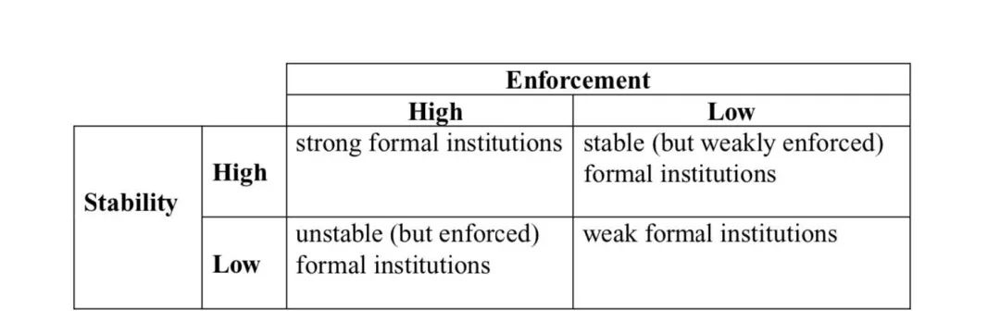

收录于合集
文献来源： Levitsky, S., & Murillo, M. V. (2009). Variation in institutional strength. Annual Review of Political Science, 12, 115-133.
作者简介： Steven Levitsky，哈佛大学政府系教授，他的研究领域包括政党政治、威权主义和民主化，以及脆弱和非正式制度，主要关注的区域是拉丁美洲。 他也是Competitive Authoritarianism: Hybrid Regimes after the Cold War (2010)的共同作者。参见：https://scholar.harvard.edu/levitsky/home
Mar ́ıa Victoria Murillo，哥伦比亚大学政治学系教授，她主要关注拉丁美洲的分配政治，她目前致力于研究政党对于选民的回应性以及塑造制度执行力和稳定性的条件。个人网站参见：https://mariavictoriamurillo.com
近来对发展中世界政治制度的研究尤其关注制度力量(institution strength)的问题。在许多发展中国家，正式制度可能既缺乏最小程度上的稳定性也不能保证被执行。在这些国家，制度不仅不能生成人们对他人行为的稳定预期，反而本身遭受着日复一日的虚置和扭曲。也就说制度十分脆弱。那么何为制度力量，为什么会出现制度力量脆弱的现象，对制度力量的关注又会对我们的研究带来哪些影响呢？
何为制度力量：执行力和稳定性
虽然一般意义上对制度的研究既包括正式制度也包括非正式制度。但本文，作者主要探讨的是正式制度的制度力量。作者从两个维度对制度力量进行概念化，分别是执行力(enforcement)和稳定性(stability)。其中，执行力指的是成文的规则在实践中被遵循的程度，而稳定性主要指的是制度的持久性(durability)。那些能够历经长时间考验和外部环境变化的制度往往具有较高的稳定性。制度的稳定性和执行力并不总是共变的。通过对制度稳定性和执行力的判断，我们可以对制度力量做一个类型学划分。

第一类是在执行力和稳定性上都表现优秀的正式制度。发达民主国家的主要制度都属于这一类别。第二类是那些得到有效执行但稳定性却很差的制度。例如民主化之后波兰的选举制度。民主化十年内先后产生了四部差别很大的选举制度，虽然这些制度大体上得到了有效的执行。但在这样的制度下，人们很难根据行动者过去的行为形成对未来行动的稳定预期。第三类制度虽然存在的时间很长，但在实践中却被广泛的忽视了。例如墨西哥1917年宪法，至今一直实行。但其中关于公平选举、弱总统制的条文在革命制度党一党独大时期长期被忽视。第四类制度是那些既不稳定执行力又差的制度。例如玻利维亚的第一部宪法，1826年颁布，几乎从未得到完全的实行，并且在三年后就被废除了。
制度何以脆弱？
为什么央行制度的独立性在后皮诺切特时代的智利得到了尊重和贯彻，却在阿根廷被反复破坏？什么条件会导致一个脆弱制度的形成呢？
许多执行力差的制度是由于创建他们的行动者就不希望这样的制度能被有效执行。例如许多非洲国家领导人采用西式的政治制度是为了寻求国内和国际的合法性，却不想让这些制度限制自己的权力。还有一些脆弱的制度并不是有意造成的。创造这些正式制度的行动者可能缺乏有效执行的能力。例如能力低下的官僚体系让很多由政府负责执行的法律法规难以发挥实际作用。制度执行力的脆弱还可能来自于正式制度的权威和实际权力掌控者的分离。在这种情况下，那些制定规则的人并没有系统执行这些规则的能力。还有一些情况，制度执行力的脆弱虽不是有意造成的，但也不是意料之外的事。雄心勃勃的改革者可能会刻意制定一些难以执行的激进制度。此外，执行力的脆弱性也可能来自于社会配合程度的变化。最后，高度的社会、经济和民族宗教身份的不平等也是制度执行力差的原因。处于弱势地位的群体往往既不能充分知晓自己的权利，也不能对国家权威进行有效的监督。
规则制定者和权力掌控者的分离不仅让制度难以执行，更是制度难以维系下去的重要原因。在转型条件下，新的制度要想维系下去要么得到了规则制定程序之外强大行动者的接受，要么彻底的打败了主要的反对派。制度稳定性受时间性因素的影响也很大。制度设计的速度（pace）会影响制度的稳定性，经过较长时间设计出来的制度让行动着有更多时间去评估制度的后果，这样的制度稳定性一般也比较强。制度的稳定性似乎会遵循一个路径依赖的逻辑。那些存在时间更长的制度会让行动者对制度的持续稳定形成预期，从而抑制行动者寻求具有破坏性的高贴现率行为。相反，如果制度在之前一直被反复推翻，那么行动者就会产生制度不稳定的预期，而寻求利己的高贴现率行为。
制度力量分析的作用
评估制度效用
许多对政治制度进行比较分析的文献都集中于关注制度设计的变化是如何塑造政治经济结果的。尤其在80、90年代的研究中，对于制度设计的关注都假设了正式制度能够切实约束行动者行为。在对总统制的研究中，学者们主要关注总统制下的正式制度和其他非正式因素。但近来的研究发现，制度执行力度的不同也会显著影响总统制政体的功能。从正式制度看，智利的总统权力非常强，而墨西哥的总统权力却很弱。然而在实践中我们却看到了恰恰相反的情形。考虑执行力的问题同样有助于我们对央行的理解和研究。在发达国家中，央行的独立性是对该国通货膨胀很好的预测因子。然而在发展中国家，央行领导人的更换频率（反映了独立性的执行力）才能较好的预测通货膨胀。这都说明，在比较政治制度分析中，执行力是一个应该被纳入考虑的因素。
理解制度设计
大多数关于制度设计的理论都是基于对强制度能力国家的研究。实际上执行力与稳定性的变化同样与制度设计有关。行动者对于制度设计的偏好常常取决于他们对制度稳定性与执行力的期望。例如，学者们发现，政治家在面临可能失去权力的情况下会创造一套自我限制的制度从而在未来限制对手，但是当政治家认为眼下的制度不能延续下去时，他就不可能创造一套自缚手脚的机制用来限制继任者。如军政府领导人。对制度执行力的脆弱预期，也会让行动者更容易去接受一些外来的制度。
分析制度发展与变迁
考虑制度力量的因素对制度发展、变迁的研究也有很大影响。脆弱的制度更可能反复出现激进的变革。执行力差的制度很难限制行动者的行为，行动者可以从容的选择对现有制度的替代选项。而那些稳定性较差的制度，则让全面替代现有制度的成本变得相对较低。对制度力量的关注让我们能够看到制度演进的另一种形式：执行力程度的变化。执行力程度的增加或者减少都实现了制度效果的变化，都改变了行动者的预期和行为，尽管此时正式制度的条文并没有发生改变。
总之对制度力量的关注能让我们更好的理解为什么政治家要创建这样的制度，制度如何塑造政治结果，以及制度如何演进。
结论
目前我们可以认为，正式制度的执行力和稳定性十分重要。我们呼吁要认真对待制度能力，把制度能力当作一种变量。这将既有利于我们应用制度理论研究发达地区，也有利于我们解释发展中地区的政治现象。下面该解决的一个关键性问题是如何测量制度的执行力和稳定性。这是我们未来广泛应用制度力量概念的关键。
编译：赵德昊
编辑：吴温泉
审读：释启鹏


政文观止
微信扫一扫赞赏作者 __赞赏
已喜欢，对作者说句悄悄话
取消 __
发送给作者
发送
最多40字，当前共字
上一页 1/3 下一页
长按二维码向我转账
受苹果公司新规定影响，微信 iOS 版的赞赏功能被关闭，可通过二维码转账支持公众号。